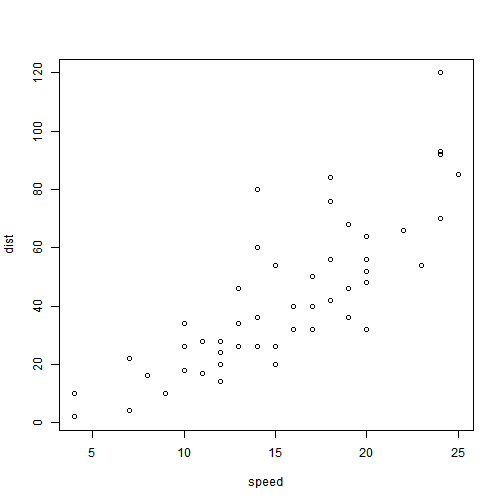

This is a simple web app.
This app predicts if you will receive an answer to your question on Stackoverflow, based on your:
- badges
- reputation
- votes
- views
- tags

Jason D. Miller, MS, MS
This is a simple web app.
This app predicts if you will receive an answer to your question on Stackoverflow, based on your:
To construct this algorithm I
My methodology for sampling questions was to focus on questions tagged with R and to sample 50 questions from each 100 pages of questions from present to the oldest questions archived by Stackoverflow, where each page of questions contained 50 questions.
Simply update the values in the sidepanel to reflect
Note that the data used to train my classifer were largely questions that contained (at least) an R tag, so de-selecting the R tag may lead to less accurate predictions.
We start by reading in a randomForest model developed in analysis.R and the first row of the training dataset.
x <- readRDS("x.rds")
rf <- readRDS("rf.rds")
userdf <- x[1,]
dim(userdf)
## [1] 1 1033
head(colnames(userdf))
## [1] "votes" "reputation" "views" "bron_badges" "silv_badges"
## [6] "gold_badges"
Then I use the UI to reactively update the values of this one row dataframe and predict an outcome.
The performance of my algorithm was moderately good. With only 50 trees I had 81% accuracy. In the future I intend to integrate text mining of the question titles and bodies to boost performance.
